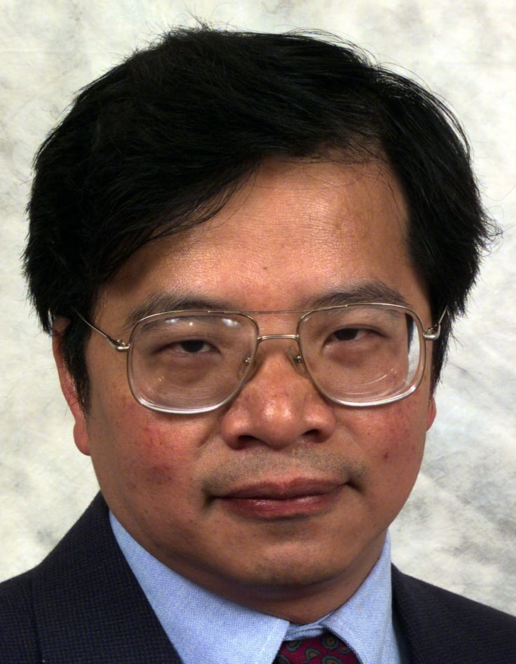

Invited Talk 1
Paralinguistic-aware Target Speech Extraction for Cinematic Audio Source Separation
Prof. Chin-Hui LEE, Georgia Institute of Technology
November 15 (Sun) · 10:30–11:10
Abstract
Target speech extraction (TSE) is emerging as a key research issue in cinematic audio source separation (CASS), involving decomposing a soundtrack, also known as the cocktail fork problem, into its constituents: speech, music, sound effects and nonverbal vocalization (NVV). Once isolated, such individual stem facilitates various downstream applications: enhancing dialogue, remastering, dubbing content into foreign languages, or removing intrusive background noise, etc. Sound effects can range from quiet animal noise to intense thunderstorms. In addition, some movie soundtracks, once captured, are difficult to reproduce or re-record. Therefore, isolating these already-recorded mixed sources through TSE is becoming a challenging and practical issue in the movie industry. The currently prevailing end-to-end modeling strategy often relies on a large amount of condition-specific training data which is not easily met in CASS.
Recently, by utilizing movie script as a knowledge source based on automatic speech attribute transcription (ASAT) of manner of articulation, we have developed an articulation-aware TSE framework for mixed speech in the presence of background sound effects. Experimental results demonstrate that articulation labels can be reliably aligned to mixture audio and provide useful information to improve separation performance on cinematic audio. Since paralinguistics focuses on how something is said rather than what is said. One key element to be considered is NVV, such as sighs, gasps, laughs, crying, cheering, moans, and throat-clearing. We intend to extend the articulation-aware ASAT framework to detect NVV cues and use them for paralinguistic-aware TSE in CASS. We believe there are also other knowledge sources to be utilized to further improve system performances in difficult movie tracks.
Biography
Chin-Hui Lee is a professor at School of Electrical and Computer Engineering, Georgia Institute of Technology. Dr. Lee received the B.S. degree in Electrical Engineering from National Taiwan University, Taipei, in 1973, the M.S. degree in Engineering and Applied Science from Yale University, New Haven, in 1977, and the Ph.D. degree in Electrical Engineering with a minor in Statistics from University of Washington, Seattle, in 1981.
Dr. Lee started his professional career at Verbex Corporation, Bedford, MA, and was involved in research on connected word recognition. In 1984, he became affiliated with Digital Sound Corporation, Santa Barbara, where he engaged in research and product development in speech coding, speech synthesis, speech recognition and signal processing for the development of the DSC-2000 Voice Server. Between 1986 and 2001, he was with Bell Laboratories, Murray Hill, New Jersey, where he became a Distinguished Member of Technical Staff and Director of the Dialogue Systems Research Department. His research interests include multimedia communication, multimedia signal and information processing, speech and speaker recognition, speech and language modeling, spoken dialogue processing, adaptive and discriminative learning, biometric authentication, and information retrieval. From August 2001 to August 2002 he was a visiting professor at School of Computing, The National University of Singapore. In September 2002, he joined the Faculty Georgia Institute of Technology.
Prof. Lee has participated actively in professional societies. He is a member of the IEEE Signal Processing Society (SPS), Communication Society, and the International Speech Communication Association (ISCA). In 1991-1995, he was an associate editor for the IEEE Transactions on Signal Processing and Transactions on Speech and Audio Processing. During the same period, he served as a member of the ARPA Spoken Language Coordination Committee. In 1995-1998 he was a member of the Speech Processing Technical Committee and later became the chairman from 1997 to 1998. In 1996, he helped promote the SPS Multimedia Signal Processing Technical Committee in which he is a founding member.
Dr. Lee is a Fellow of the IEEE and ISCA, and has published 500 papers and 30 patents with more than 33,300 citations and an h index of 75 on Google Scholar. He received the SPS Senior Award in 1994 and the SPS Best Paper Award in 1997 and 1999, respectively. In 1997, he was awarded the prestigious Bell Labs President’s Gold Award for his contributions to the Lucent Speech Processing Solutions product. Dr. Lee often gives seminal lectures to a wide international audience. In 2000, he was named one of the six Distinguished Lecturers by the IEEE Signal Processing Society. He was also named one of the two ISCA’s inaugural Distinguished Lecturers in 2007-2008. He won the SPS’s 2006 Technical Achievement Award for “Exceptional Contributions to the Field of Automatic Speech Recognition”. In 2012 he was invited by ICASSP to give a plenary talk on the future of automatic speech recognition. He was awarded the 2012 ISCA Medal in scientific achievement for “pioneering and seminal contributions to the principles and practice of automatic speech and speaker recognition, including fundamental innovations in adaptive learning, discriminative training and utterance verification”.